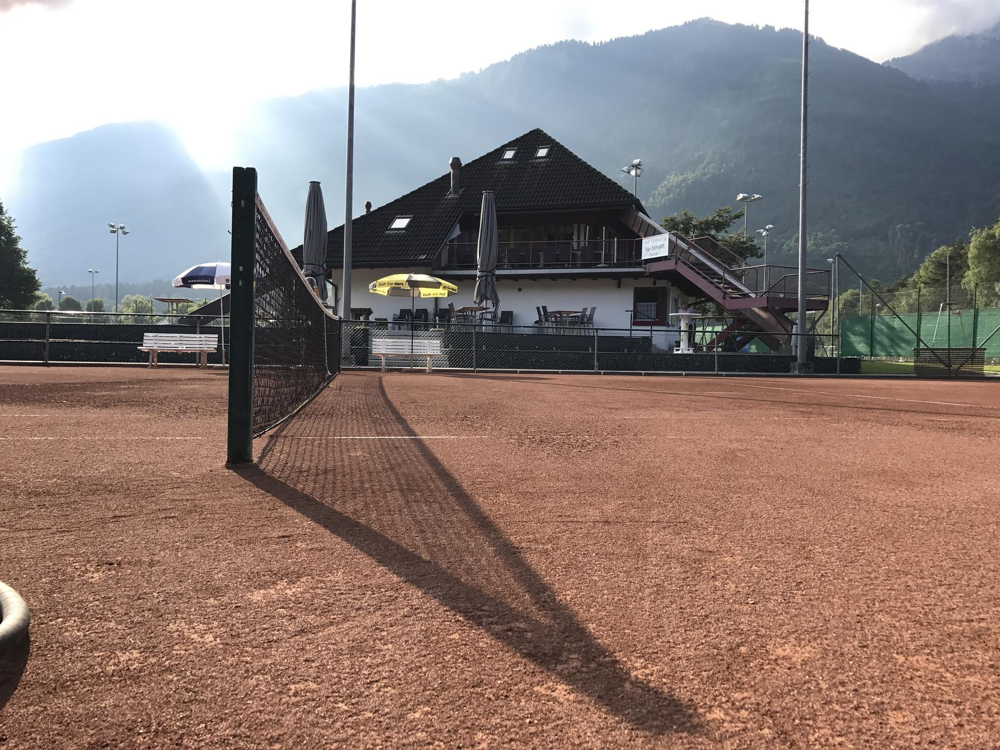

Spielbetrieb
Interclub, Junioren Interclub und Team Challenge
Hier findet der sportliche Kalender des TC Eschen-Mauren seinen Platz: Teams, Heimspiele, Auswärtspartien und die wichtigsten Termine der Saison.

Teams
Interclub Mannschaften und Captains
Die Teamlisten sind als einfache Karten aufgebaut. Pro Mannschaft kannst du Liga, Captain und Kontakt direkt im HTML anpassen.

Nachwuchs
Junioren Interclub Teams
Hier haben die Juniorenteams ihren eigenen Bereich. Wenn ihr mehrere Altersklassen habt, kannst du einfach weitere Karten ergänzen.

Team Challenge
Team Challenge Gruppen und Ansprechpersonen
Für flexible Clubmatches kannst du hier Gruppen, Captains oder Organisatoren aufführen.
Kalender
Interclub Termine und Matches
Die Einträge sind bewusst als einfache Karten aufgebaut. Zum Aktualisieren kopierst du eine Karte, änderst Datum, Team, Gegner und Ort, und der Kalender bleibt automatisch sauber sortierbar.
Mitspielen
Fragen zu Teams, Captains oder Spielterminen?
Die Spielleitung hilft dir weiter, wenn du neu in ein Team einsteigen möchtest, einen Termin suchst oder Informationen zu einer Begegnung ergänzen willst.